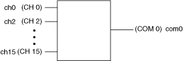
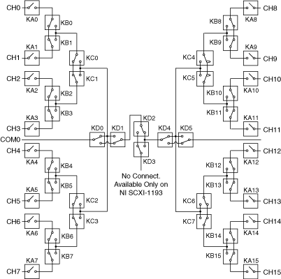

The following figure represents the NI PXI/PXIe-2593 (NI 2593) 16×1 multiplexer topology.
|  |
|
The following figure shows the reset position of the NI 2593 in the 16×1 multiplexer topology.

The NI 2593 in this topology contains 16 channels connected to a common channel. These channels are referred to as ch<0..15>, and the common channel is referred to as com0. You can connect any channel to com0 in this topology.
You can connect the channels of the NI 2593 using the niSwitch Connect Channels VI or the niSwitch_Connect function. For example, to connect channel 15 to common 0, call the niSwitch Connect Channels VI or the niSwitch_Connect function with the channel 1 parameter set to ch15 and the channel 2 parameter set to com0.
When scanning the NI 2593, a typical scan list entry could be ch2->com0;. This entry routes the signal from ch2 to com0.